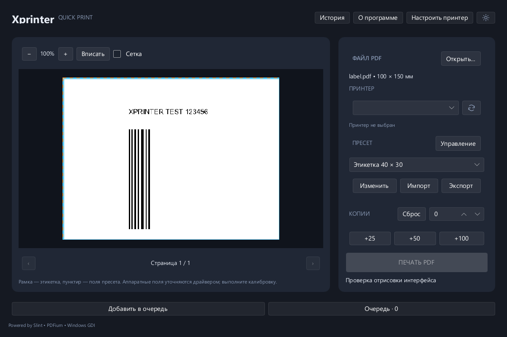

Сохранённые пресеты
Размер этикетки, масштаб, поля и поворот. Импортируйте и экспортируйте свои настройки.
Перетащите PDF, выберите пресет и количество копий. Проверьте превью и отправьте этикетки на Xprinter одной кнопкой.

Размер этикетки, масштаб, поля и поворот. Импортируйте и экспортируйте свои настройки.
Кнопки +25, +50 и +100 прибавляют копии. Небольшое количество можно ввести вручную.
После каждого PDF очередь ждёт кнопку «Продолжить». Следующая партия начинается по вашему действию.
Запустите XprinterQuickPrint_Setup.exe. Установщик создаст ярлыки. Для Portable распакуйте весь ZIP в доступную для записи папку и откройте XprinterQuickPrint.exe.
Подключите Xprinter и выберите его в мастере. Если очереди принтера нет, мастер поможет открыть настройку Windows. Драйвер выбирается под вашу модель.
Для этих артикулов уже выбран встроенный JOPA 44×23 мм. Проверьте превью и размер своей ленты. Также доступен HH 40×24 мм. При обновлении старой установки JOPA можно добавить кнопкой «Импорт».
Введите 1 и проверьте результат. Затем задавайте нужное количество или собирайте очередь из нескольких PDF с паузами между партиями.
Да, для печати нужна настроенная очередь Windows с совместимым драйвером. Драйвер в архив не включён. Используйте штатный мастер Windows или официальный пакет для своей модели. Без принтера доступны просмотр PDF и создание пресетов.
Текущие сборки распространяются без цифровой подписи. Загружайте файлы из раздела Releases этого репозитория. Там опубликованы контрольные суммы SHA-256.
У установленной версии настройки хранятся в пользовательском каталоге Windows. У Portable — в папке config рядом с EXE. При замене Portable сохраните свою папку config.
Получена положительная ручная проверка на Xprinter XP-365B. Для другой модели проверьте драйвер, размер бумаги и первую этикетку. Проверка на чистых Windows 10/11 и других физических моделях пока не выполнена.
Приложение открывает PDF и печатает локально. Интернет может понадобиться для первоначального получения драйвера через Windows Update или сайт производителя.